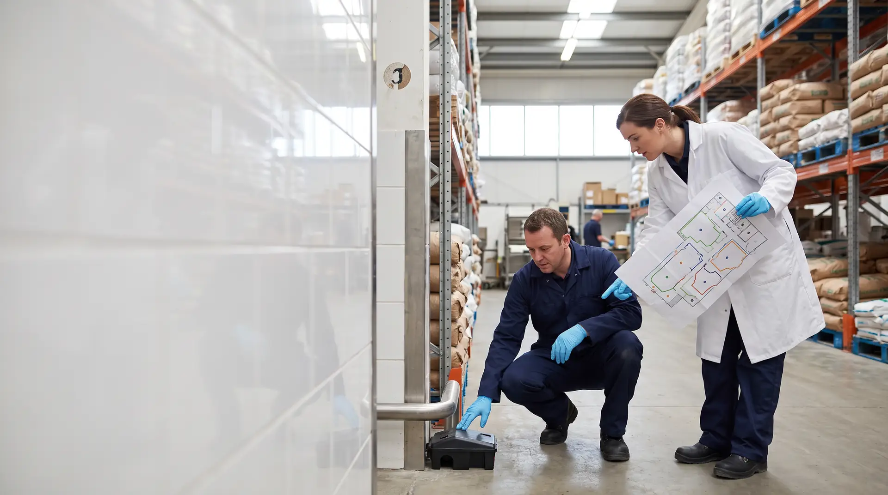
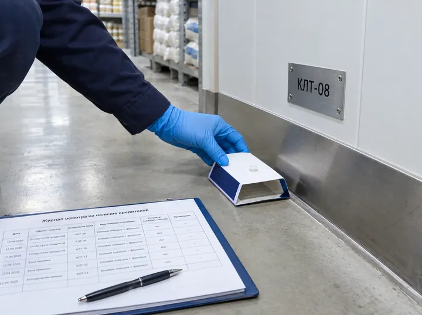

Схема точек пест-контроля: образец и правила

Схема точек пест-контроля (план-схема ТПК) — план объекта, на котором пронумерована каждая станция, ловушка и световая лампа. По ней специалист обходит точки, а инспектор и аудитор сверяют журнал с тем, что видят на месте. План размещения ловушек прямо требует ГОСТ Р 54762-2011 (п. 12.5). Ниже — интерактивный образец для хлебопекарного цеха на 30 точек и PDF.
Схема точек пест-контроля в пяти фактах
- Требование ГОСТ
«Необходимо иметь план размещения датчиков обнаружения и ловушек» — п. 12.5 ГОСТ Р 54762-2011. На него опираются аудиты ХАССП, FSSC 22000 и торговых сетей.
- Один номер везде
Номер точки на схеме, на настенном указателе и в журнале один и тот же — так проверяющий сверяет записи с местом.
- Три контура
Территория, периметр здания и внутренние помещения. В каждом контуре — свои устройства и пороги.
- Без ядов у продукции
Станции с приманкой — запираемые, на территории и в зонах без пищевой продукции. У продукции — ловушки и мониторы без родентицидов.
- Редакция с датой
Перенесли или добавили точку — запись в журнале и новая редакция схемы с подписями сторон.
Образец план-схемы: хлебопекарный цех, 30 точек
Тот же объект, что в образцах журнала пест-контроля и акта: номера, места и пороги точек совпадают. Нажмите на точку, чтобы увидеть её в реестре.
ПЕСТКОНТРОЛЬЦЕНТР
Пест-контроль для организаций · IPM / ХАССП
Пест-контроль · ГОСТ Р 54762-2011, п. 12.5
План-схема
точек пест-контроля (ТПК) объекта · приложение 1 к журналу пест-контроля № ПК-0917/26
ред. 2 · 21.10.2026
План шире экрана — листайте его вбок.
Контуры защиты
Типы точек
- КИК — станция с приманкой, запираемаяконтур К1 · 8 шт.
- МЛ — ловушка механическая / клееваяконтур К2, К3 · 10 шт.
- ИМ — клеевой монитор насекомыхконтур К3 · 6 шт.
- ИЛ — световая УФ-ловушкаконтур К3 · 4 шт.
- ФЛ — феромонная ловушка (пищевые огнёвки)контур К3 · 2 шт.
Нажмите на точку на плане — здесь появятся её тип, контур, место установки и порог из реестра.
Образец план-схемы · PDF, 2 листа
План объекта с контурами защиты и 30 точками, легенда, история редакций с подписями сторон и реестр точек: номер, тип, контур, место установки и порог. Форма СТПК-01 — наша рабочая форма, заказчик в образце обезличен.
Что должно быть на схеме точек
Единой формы нет. Проверяющему важно, чтобы по схеме можно было найти любую точку на объекте и в журнале.
- План территории и этажейс названиями помещений и зон: склад сырья, цех, моечная, экспедиция, площадка ТКО.
- Контуры защитылиниями: территория, периметр здания, внутренние помещения.
- Каждая точка с номеромпрефикс типа и порядковый номер: КИК-05, МЛ-10, ИМ-03. Номера не повторяются.
- Места риска заходаворота, доки, входы, вентшахты, вводы коммуникаций, контейнерная площадка.
- Легендакакой значок — станция с приманкой, ловушка, клеевой монитор, световая или феромонная ловушка.
- Реестр точекместо установки и порог по каждой точке — в приложении к схеме или в журнале.
- Номер, редакция и датаи ссылка на программу пест-контроля и журнал, к которым относится схема.
- Подписи сторонисполнитель составил, заказчик согласовал — по каждой редакции.
Типы точек контроля и где их ставят
| Обозначение | Что это | Где ставят | Что записывают |
|---|---|---|---|
| КИК | Станция контроля грызунов с приманкой, запираемая и закреплённая | Ограждение, отмостка, контейнерная площадка, снаружи у ворот и входов | Поедаемость приманки, следы, состояние и доступность станции |
| МЛ | Механическая или клеевая ловушка для грызунов, без яда | Изнутри у ворот, доков и входов, на складах, в помещениях с продукцией | Поимки, следы, замену пластины |
| ИМ | Клеевой монитор ползающих насекомых | Под оборудованием, у моек и трапов, в кабель-каналах, в комнатах приёма пищи | Вид и число насекомых, оотеки |
| ИЛ | Световая УФ-ловушка для летающих насекомых | У входов в цех, в экспедиции и на складе — не над открытым продуктом и не на виду из открытых ворот | Число насекомых за период, замену экрана и ламп |
| ФЛ | Феромонная ловушка для пищевой моли и огнёвок | Склады муки, круп и сухих ингредиентов | Число бабочек за период, замену капсулы |
Обозначения — как в наших образцах; у другого исполнителя префиксы могут быть другими. Главное — чтобы легенда на схеме объясняла каждый значок.
Как расставляют точки и составляют схему
- Обследование.Пути захода вредителей, источники корма и воды, зоны риска. Результат — акт первичного обследования.
- Контуры.К1 — станции по ограждению, у площадки ТКО и вдоль стен; К2 — по обе стороны ворот, доков и входов; К3 — в помещениях вдоль стен и у оборудования.
- Плотность по риску.У входов, доков, складов сырья и мест сбора отходов точек больше. Устройства ставят на путях передвижения и проникновения грызунов (МР 3.5.3.0374-25).
- Нумерация.Префикс типа и порядковый номер, без повторов. У каждой точки — настенный указатель с тем же номером.
- Схема и реестр.Точки наносят на план, в реестр — место и порог. Стороны подписывают схему, она становится приложением к программе и журналу.
Ориентир для раскладки приманок в помещениях при дератизации — 3–5 точек на 100 м² (МР 3.5.3.0374-25, раздел IV). Число мониторинговых точек считают не по метрам, а по риску зоны: это решение фиксируют в программе пест-контроля.
Когда и как обновлять схему
- Точку перенесли, добавили или сняли.
- Перепланировка, новая зона хранения или новое оборудование.
- Сезонное уплотнение точек на территории.
- Замечание аудитора или инспектора по расстановке.
- Ежегодный пересмотр программы пест-контроля.
- Запись в журнале: дата, номер точки, что изменили и почему.
- Новая редакция схемы с номером, датой и подписями сторон.
- Настенный указатель переносят вместе с точкой.
- Прежнюю редакцию хранят вместе с новой — по ней видна история.
В образце: редакция 2 от 21.10.2026 — МЛ-10 перенесена на 0,5 м к углу стеллажа А-2, ближе к вводу кабеля.
Ошибки в схеме, которые видны на проверке
- Номера на схеме не совпадают с настенными указателями и журналом.
- Точка есть на схеме, но её нет на месте, или наоборот.
- Схема не обновлена после перепланировки или переноса точек.
- Нет легенды: непонятно, где станция с приманкой, а где ловушка без яда.
- Станции с родентицидом стоят в помещениях с открытой пищевой продукцией.
- Световая ловушка висит над открытым продуктом или видна снаружи через ворота.
- Нет даты, редакции и подписей — неясно, действует ли схема.

Как схема связана с другими документами
- ПрограммаЗоны, пороги, кратностьСхема — раздел 4 программы
- СхемаГде стоит каждая точкаВы на этой странице
- ЖурналЧто нашли в каждой точкеРеестр точек — раздел 2
- АктЧто сделали за визитНаходки по номерам точек
Кто подготовил материал

ИсточникиОфициальные тексты (проверено 11.11.2026)
- ГОСТ Р 54762-2011 / ISO/TS 22002-1:2009, раздел 12 «Борьба с вредителями», п. 12.5 — МегаНорм, Росстандарт
- МР 3.5.3.0374-25 «Организация и проведение дератизационных мероприятий», раздел IV — КонсультантПлюс; раздел V (запираемые приманочные станции) — ЦЭП-портал
- СанПиН 3.3686-21, пп. 98–116 — pravo.gov.ru
Связанные услуги и материалы
Вопросы о схеме точек
Если предприятие работает по ГОСТ Р 54762-2011 или проходит аудит FSSC 22000 и торговых сетей — да: п. 12.5 стандарта требует иметь план размещения датчиков обнаружения и ловушек. СанПиН отдельного документа не называет, но схема точек входит в программу пест-контроля и показывает инспектору, где и как вы контролируете вредителей.
Исполнитель по итогам первичного обследования объекта, заказчик её согласует. Если пест-контроль ведут своими силами — ответственный сотрудник предприятия.
Префикс типа устройства и порядковый номер: КИК-01, МЛ-10, ИМ-03. Номер не повторяется и совпадает на схеме, настенном указателе и в журнале. Номер снятой точки повторно не используют.
Столько, сколько требует риск зон, а не формула. Плотнее — у входов, доков, складов сырья и мест сбора отходов. Ориентир для раскладки приманок в помещениях при дератизации — 3–5 точек на 100 м² (МР 3.5.3.0374-25). В образце хлебопекарного цеха на 1 850 м² — 30 точек в трёх контурах.
В помещениях с открытой пищевой продукцией используют ловушки и клеевые мониторы без родентицидов — этого ждут аудиторы ХАССП и торговых сетей, так работаем и мы. Станции с приманкой — запираемые и закреплённые, на территории и в зонах без продукции.
При каждом переносе, добавлении или снятии точки, после перепланировки и смены зон хранения. Изменение записывают в журнал, а схема получает новую редакцию с датой и подписями сторон.
В папке объекта вместе с программой пест-контроля и журналом и у исполнителя; удобно иметь и электронную копию. На проверке схему сверяют с журналом и с точками на месте, поэтому на объекте должна быть действующая редакция.
Составим схему точек для вашего объекта
Приедем на бесплатное обследование, найдём пути захода и зоны риска и предложим расстановку точек. Схема точек и реестр входят в пакет документов по договору вместе с программой, журналом и актами.
- Три контура защиты и номера точек
- Реестр точек с местами и порогами
- Новая редакция при каждом переносе